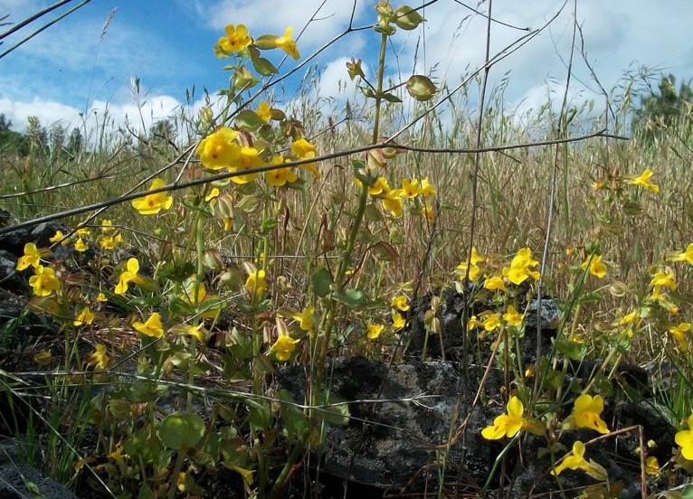
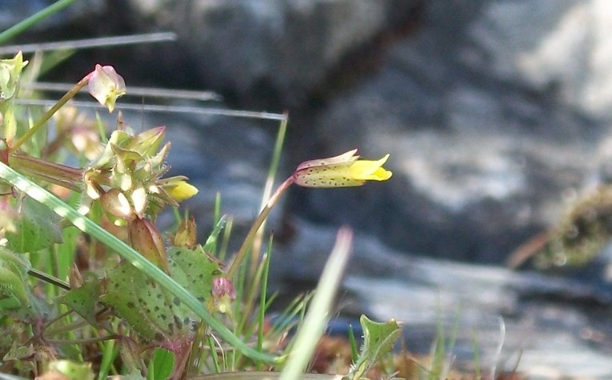

Research
Hybrid incompatibilities
A major focus of the lab is on understanding the genetic and evolutionary mechanisms of hybrid incompatibilities. We have determined the molecular genetic basis of hybrid seedling lethality between sympatric populations of
Mimulus guttatus and
M. nasutus (pictured above,
Zuellig & Sweigart 2018) and experiments are now underway to characterize the evolutionary history of the causal genes. Ongoing projects are also investigating the genetics of hybrid seed lethality (
Garner et al. 2016,
Sandstedt et al. 2021,
Sandstedt & Sweigart 2022,
Farnitano & Sweigart 2023) and hybrid sterility (e.g.,
Sweigart & Flagel 2015,
Kerwin & Sweigart 2017,
Kerwin & Sweigart 2020) between closely related species of monkeyflowers.
Genetics of adaptation and premating isolation
Using a powerful combination of approaches — genetic mapping, field experiments, and population genomics — we are investigating the genetic basis of ecological adaptation and its potential to maintain species boundaries in nature (e.g.,
Mantel & Sweigart 2019,
Mantel & Sweigart 2024). We are currently working to determine if reproductive isolation between sympatric
M. guttatus and
M. nasutus is due to genes exhibiting fitness tradeoffs between different microhabitats.
Hybridization and introgression

Our studies focus on sympatric populations of M. guttatus and M. nasutus, located at Catherine Creek in southern Washington (hybrids from the site are pictured above). Despite strong barriers to interspecific reproduction, including differences in flowering time (Fishman et al. 2014) and mating system, our population genomic data demonstrate ongoing hybridization and introgression (Brandvain et al. 2014, Kenney & Sweigart 2016, Farnitano et al. 2025).
Polyploid adaptation and speciation

Because polyploid speciation is both instantaneous and indisputably sympatric, studies of polyploid divergence can provide unique insight into ecological adaptation in nascent species. Along with collaborators, we have investigated the evolutionary origin and maintenance of a newly discovered allotetraploid species —
Mimulus sookensis — formed by interspecific hybridization between closely related species in the
M. guttatus complex (
Sweigart et al. 2008). We have also recently developed a reference genome for
M. sookensis and determined that the species has a single evolutionary origin (
Whitener et al. 2024).